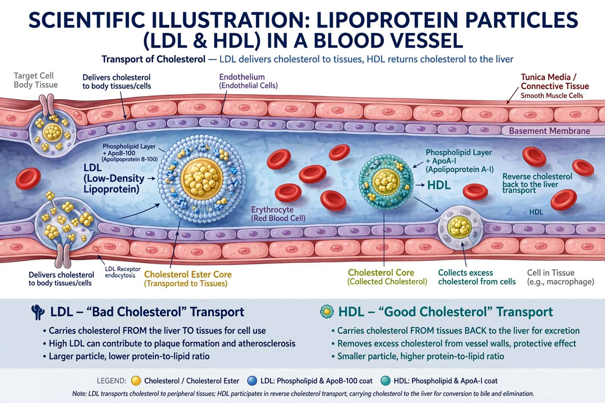

| Dyslipidemia | |
|---|---|
| Specialty | Cardiology, endocrinology |
| Symptoms | Usually none; may cause xanthomas |
| Complications | Atherosclerosis, coronary artery disease, stroke, pancreatitis |
| Causes | Genetic factors, diet, diabetes, obesity, hypothyroidism |
| Treatment | Lifestyle modification, statins, fibrates, PCSK9 inhibitors |

Dyslipidemia is a metabolic disorder characterized by an abnormal amount of lipids (e.g. triglycerides, cholesterol and/or fat phospholipids) in the blood. In developed countries, most dyslipidemias are hyperlipidemias; that is, an elevation of lipids in the blood. This is often due to diet and lifestyle. Prolonged elevation of insulin resistance can also lead to dyslipidemia.
Physicians and basic researchers classify dyslipidemias in two distinct ways. One way is its manifestation in the body, including the specific type of lipid that is increased. The other is the underlying cause for the condition, whether it is genetic (primary dyslipidemias) or due to another condition (secondary dyslipidemias). The Fredrickson classification divides hyperlipidemias into five phenotypes based on the pattern of lipoproteins on electrophoresis or ultracentrifugation.
Dyslipidemia is diagnosed by measuring serum lipids in a blood test, typically a fasting lipid profile including total cholesterol, LDL cholesterol, HDL cholesterol and triglycerides. Management begins with lifestyle changes — diet, exercise and weight loss — and may include lipid-lowering medications such as statins, which reduce the risk of cardiovascular disease.
See also: Hypercholesterolemia · Statin · Atherosclerosis · Triglyceride